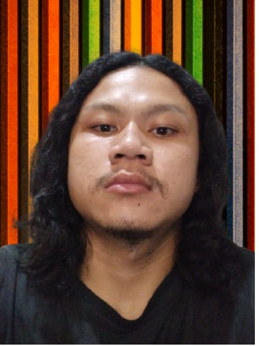

Restaurant Uciha
Dibuka pada awal tahun 2021,Restaurant bertemakan japanese food.
- Fun Fact Tentang Uciha Restaurant :
- Pemilik Restaurant Ini Adalah 4 Sekawan Yang Bekerja Sama Membangun Usaha Restaurant Jepang Ini.
- Restaurant Ini Dibuat Dengan Dana Bansos Dan Penambahan Dana Dari Max Win Papi Zeus Slot.
- 4 Sekawan Pemilik Restaurant Ini Adalah Lulusan Terbaik dari Universitas Islam Syekh Yusuf.
Pemilik Restaurant Ini Mengandalkan Kemampuannya Dalam Bidang Web Design Dalam Membuat Web Bertemakan Japanese Food. Dalam Website ini Customer Bisa Memberi Rating Pada Makanan Yang Disajikan Dalam Restaurant Ini.
Biografi Pemilik Restaurant
4 Sekawan Pemilik Restaurant
Sauqi Kevin Damara
Cibodasari,Tangerang.
Aldrich Daffa Zalfansyah
Kosambi, Tangerang
Wahyu Syahril Hidayat
Green Lake City, Jakarta Barat
Dimas Nur Prasetyo
Curug,Tangerang
Menu
Check Our Tasty Menu

Favorit
Recomended Menu Favorit
Architecto ut aperiam autem id
Qui laudantium consequatur laborum sit qui ad sapiente dila parde sonata raqer a videna mareta paulona marka
Et nobis maiores eius. Voluptatibus ut enim blanditiis atque harum sint. Laborum eos ipsum ipsa odit magni. Incidunt hic ut molestiae aut qui. Est repellat minima eveniet eius et quis magni nihil. Consequatur dolorem quaerat quos qui similique accusamus nostrum rem vero
Et blanditiis nemo veritatis excepturi
Qui laudantium consequatur laborum sit qui ad sapiente dila parde sonata raqer a videna mareta paulona marka
Ea ipsum voluptatem consequatur quis est. Illum error ullam omnis quia et reiciendis sunt sunt est. Non aliquid repellendus itaque accusamus eius et velit ipsa voluptates. Optio nesciunt eaque beatae accusamus lerode pakto madirna desera vafle de nideran pal
Impedit facilis occaecati odio neque aperiam sit
Eos voluptatibus quo. Odio similique illum id quidem non enim fuga. Qui natus non sunt dicta dolor et. In asperiores velit quaerat perferendis aut
Iure officiis odit rerum. Harum sequi eum illum corrupti culpa veritatis quisquam. Neque necessitatibus illo rerum eum ut. Commodi ipsam minima molestiae sed laboriosam a iste odio. Earum odit nesciunt fugiat sit ullam. Soluta et harum voluptatem optio quae
Fuga dolores inventore laboriosam ut est accusamus laboriosam dolore
Totam aperiam accusamus. Repellat consequuntur iure voluptas iure porro quis delectus
Eaque consequuntur consequuntur libero expedita in voluptas. Nostrum ipsam necessitatibus aliquam fugiat debitis quis velit. Eum ex maxime error in consequatur corporis atque. Eligendi asperiores sed qui veritatis aperiam quia a laborum inventore
OWNER
4 PENDIRI RESTAURANT UCHIHA
Proin iaculis purus consequat sem cure digni ssim donec porttitora entum suscipit rhoncus. Accusantium quam, ultricies eget id, aliquam eget nibh et. Maecen aliquam, risus at semper.
Syauqi Kevin Damara
Ceo & Founder
Export tempor illum tamen malis malis eram quae irure esse labore quem cillum quid cillum eram malis quorum velit fore eram velit sunt aliqua noster fugiat irure amet legam anim culpa.
Wahyu Syahril Hidayat
Store Owner
Seorang Pria Tidak Akan Pernah Menjadi Seorang Pria Besar Tanpa Adanya Perempuan Hebat Disisinya,Yang Selalu Memberi Dukungan Dan Harapan Dalam Setiap Langkah Dan Keputusan Yang Diambil.
Dimas Nur Prasetyo
Designer
Liburan itu adalah "intiqolul amal min amalin ila amalin aakhor" Pergantian pekerjaan dari sebuah pekerjaan ke pekerjaan yang lain dengan intensitas yang lebih ringan.
Aldrich Daffa Zalfansyah
Manager
Chefs Uchiha
Chef Professional

Junior John Rorimpandey
Chef JunaRenata Moeloek
Chef RenattaArnold Poernomo
Chef ArnoldContact
Contact Restaurant
Location:
Jln Syekh Yusuf No.10, RT.001/RW.003, Babakan, Kec. Tangerang, Tangerang, Banten 15118
Open Hours:
Sunday-Monday:
11:00 AM - 23:00 PM
Website:
http://www.unis.ac.id/
Call:
+62 2352346238